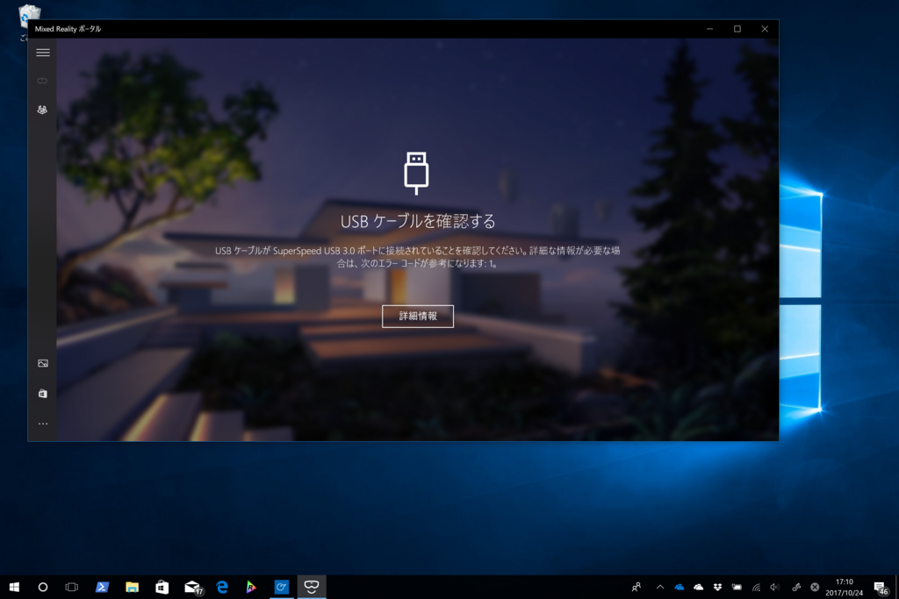

6万円出して Acer の MR ヘッドセット＋コントローラーを買ったんだけど、残念ながら動かなかった件について（追記
公開日：
Windows 10 Fall Creators Update がでたので、早速アキバのヨドバシで MR ヘッドセットを買ってきました！

Acer Windows Mixed Reality ヘッドセット AH101CV
- 出版社/メーカー: 日本エイサー
- 発売日: 2017/10/17
- メディア: Personal Computers
- この商品を含むブログを見る
コントローラー込みで6万円弱（＋1割ポイント還元）。今のところヘッドセットを先行購入した人はコントローラー単品で買えないみたいで、ちょっとかわいそう……。
ともあれ、早速 Surface Laptop につないでみたのですが……動きませんでした／(^o^)＼
症状その1: USB 接続のエラー

USB ケーブルが SuperSpeed USB 3.0 で接続されているか確認しろと言われます（接続すると、毎回）。無視して刺しなおすとエラーはでなくなるのですが……
症状その2: 画面がちらつく
接続すると初回必ず USB がおかしいって言われるが、抜き差せば先に進める。でも、画面がチカチカして動かないなー #SurfaceLaptop #WinMR pic.twitter.com/pEF9m86BRM
— だるたにゃん (@daruyanagi) 2017年10月24日
USB 接続のエラーを突破してもこんな感じです。
私はDuet Displayをアンインストールしたらうまくいきました。ミニディスプレイポートtoHDMIは純正品ですよねー？
— かずき@66.8kg (@okazuki) 2017年10月24日
そもそも USB が少々怪しいのですが、HDMI も 4K 対応（かつ、できれば純正のもの）がいいみたいです。いちいちシビアだなー。

アダプターは一応 4K/3D 対応を謳うものを取り寄せてみたのですが……まぁ、やっぱり安いのはダメなのかね。
症状その3: フリーズする
画面がちかちかする状態で少し放置してみたのですが、そのままフリーズしちゃいました／(^o^)＼
今は実家に滞在中で、手持ちの PC で Fall Creators Update にできてるのが Surface Laptop と Surface 3 しかないため（Surface 3 はスペック不足で Windows Mixed Reality に対応していない）、愛媛に帰ってからまたゆっくり試行錯誤しようかなーって思います。手っ取り早い解決策を教えてくれた方には、“めっちゃほしいけど自分で買いたくはない”ことで有名なだるやなぎ LINE スタンプを差し上げますのでよろしくお願いします！
追記（2017/10/26）
こんにちはAcerの開発者用デバイスを所有しています。どうもSurfaceのGPUに問題があるようで私のBookではUSB自体が認識されません。先日MS本社であったセミナーで個人的に質問したところ同様のトラブルが多数あるようです。
— Sthesia Sumire 坂元 旭 (@URqK77hwuGvArSr) 2017年10月26日
HDMI アダプターの問題かなーとも思うんだけど、他にも報告があるみたいで、Surface の問題かもしれない。とりあえずアップデート待ちかな？
追記その2（2017/10/26）
https://t.co/e0OYZAifeA
— 野生の男 (@yasei_no_otoko) 2017年10月26日
WinMR自体はHDMI1.4端子でも動くけどPC内蔵のminiDP・USB-Cポートを使う時はHDMI2.0対応アダプタ必須って、これ開発者向けのページなんだけどエンドユーザー向けの案内ちゃんとあるんだろうか…？ pic.twitter.com/qqY9JIJBQv
PC内蔵のminiDP・USB-Cポートを使う時はHDMI2.0対応アダプタ必須
純正のクソ高いアダプターなら大丈夫っていう情報とも整合性があるし、これはかなり有力そうな情報……明日にでも新しいアダプターを買って試してみます！